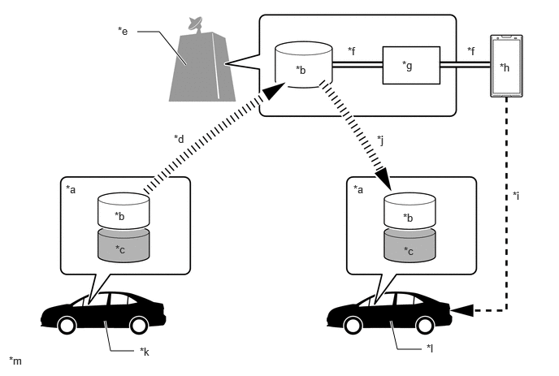
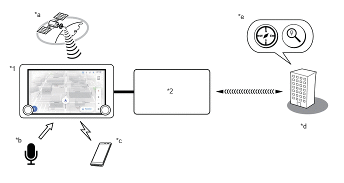

- Displays the USB video screen, each type of audio operation information, etc.
- Outputs the audio signal of the selected audio source to the speakers.*1
- Outputs the audio signal of the selected audio source to the stereo component amplifier assembly.*2
- Sends each sound source status to the combination meter assembly and headup display*3.
- The audio head unit supports HD data services that enable the audio and visual system to receive and use information from HD Radio signals.
| Last Modified: 10-07-2025 | 6.11:8.1.0 | Doc ID: NM100000002GLBZ |
| Model Year Start: 2024 | Model: Tacoma | Prod Date Range: [12/2023 - ] |
| Title: AUDIO / VIDEO: AUDIO AND VISUAL SYSTEM: AUDIO AND VISUAL CONTROL; 2024 - 2026 MY Tacoma Tacoma HV [12/2023 - ] | ||
AUDIO AND VISUAL CONTROL
FUNCTION OF MAIN COMPONENTS
|
Component |
Function |
|
|---|---|---|
|
*1: Except models with 10 speakers
*2: Models with 10 speakers *3: Models with headup display *4: Models with DCM |
||
|
Audio Head Unit |
Radio and Display Receiver Assembly |
|
|
Speakers |
Output the audio sounds. |
|
|
Stereo Component Amplifier Assembly*2 |
Amplifies audio signals sent from the audio head unit. |
|
|
Roof Antenna Assembly
|
|
|
|
Navigation Antenna Assembly |
Telephone Antenna (Sub) |
Receives signals from the application server. |
|
GNSS Antenna |
Receives signals from GNSS satellites and transmits these signals to the audio head unit. |
|
|
GPS Antenna |
Receives signals from GPS satellites and transmits these signals to the audio head unit. |
|
|
Steering Pad Switch Assembly |
Sends operation signals such as volume adjustment, mode selection and song selections to the audio head unit. |
|
|
Telephone Microphone Assembly |
|
|
|
No. 1 Stereo Jack Adapter Assembly |
When a USB memory device, portable audio player (USB type) or Apple device is connected, communicates with the audio head unit via USB. |
|
|
Combination Meter Assembly |
|
|
|
Headup Display (Meter Mirror Sub-assembly)*3 |
Receives audio source status information from the audio head unit and displays the audio source status on the headup display. |
|
|
DCM (Telephone Transceiver)*4 |
|
|
FUNCTION
(a) Automatic Sound Levelizer (ASL)
(1) The Automatic Sound Levelizer (ASL) function automatically adjusts the audio system volume level in order to compensate for increased vehicle noise (vehicle noise tends to increase as vehicle speed increases).
(2) Vehicle speed signals are received from the combination meter assembly and used for ASL control.
(b) Driver Profile Control
(1) When verification is performed via a driver identification device*1 or "Bluetooth" device*2, the audio and visual system can be used using the settings content (driver profile) stored for each driver profile*3. *4
(2) For each driver profile, the settings of each function such as the driver profile name, driver settings, etc., can be saved.*5
(3) Driver profile registration, setting driver identification device settings, changing the driver profile, initializing a driver profile, etc., can be performed using the multi-display.
(4) The audio and visual system related settings information inside each driver profile is uploaded to a dedicated server via DCM communication. Uploaded settings information can be downloaded to another vehicle.
HINT:
- *1: For information on compatible driver identification devices, refer to "MY SETTING SYSTEM".
- *2: It is necessary to register a mobile device that is compatible with SPP (Serial Port Profile) Ver. 1.2 or higher to the audio head unit.
- *3: The maximum number of driver profiles that can be registered to the audio head unit is 3.
- *4: In order to use the driver profile, it is necessary to have a valid dedicated account. When not using a driver profile, the vehicle can be used with a guest profile.
- *5: The values that can be set may vary depending on the vehicle specifications.
Driver Profile Upload/Download
|
*a |
Driver Profile |
*b |
Audio and Visual System Settings Information |
|
*c |
Settings Information Linked to In-vehicle Device |
*d |
Upload via DCM Communication |
|
*e |
Dedicated Server |
*f |
Management via Account Information of Dedicated Smartphone Application |
|
*g |
Account Information of Dedicated Smartphone Application |
*h |
Dedicated Smartphone Application |
|
*i |
Registration/Addition of Driver Profile via Account of Dedicated Smartphone Application |
*j |
Download via DCM Communication |
|
*k |
Vehicle of User |
*l |
Other Vehicle Such as Rental Vehicle |
|
*m |
This image is an example. |
- |
- |
(c) Security Lock Control
(1) The first time the system is started after the auxiliary battery is removed from the vehicle, the security lock screen is displayed and the audio and visual system stops.
(2) By entering the cancel password on the security lock screen, the security lock screen will be canceled.
(3) Security lock screen control can be set ON/OFF and the cancel password can be set using the setting mode screen.
NOTICE:
If the password is incorrectly entered on the security lock screen 20 times, the password can no longer be entered. In this case, it is necessary to perform a screen unlock using the service tool. For details, refer to the Repair Manual.
(d) Software Update Function
(1) The software update function will be available when a delivery of a new software starts.
(2) The software update function is an easy to use convenient function that automatically checks the new software update schedule, sends update information, confirms the contents of the update, displays a progress bar indicating the installation status, enables software update history to be checked, etc.
(3) The update data can be acquired via DCM communication, "Wi-Fi" communication or USB storage device.
(4) The following contents will be delivered using the software update function.
|
Item |
Details |
|---|---|
|
Action |
Software push regarding recall, remediation measures, service campaign, etc. |
|
Function/performance improvement |
Software push with the goal of improved functions/performance such as correction of system malfunctions. |
|
Marketability maintenance |
Software push with the goal of maintained marketability such as connection compatibility with external devices, improvements to the screen display, etc. |
|
Marketability improvement |
Software push with the goal of improved marketability such as the addition of new functions. |
(5) The software update is performed mainly using the following methods.
|
Method |
Details |
|---|---|
|
Manual update by user |
By checking the audio head unit for a software update, a manual update is performed. |
|
Update notification during power on operation |
When power is supplied to the audio head unit, new software update information is displayed on the multi-display. |
|
Update notification via push server |
Whenever the push server pushes the update, new software update information is displayed on the multi-display. |
|
Manual update via USB storage device |
A manual update is performed using update data saved to a USB storage device. |
NOTICE:
- When performing a software update via a USB storage device, it may take a long amount of time to verify the USB storage device if there are many unrelated files stored on the device when performing the update.
- After performing the update, it is not possible to revert to the previous version.
- It is necessary for the customer to incur the cost of the USB storage device, all computer communication fees, etc.
- Some functions cannot be used when a software update is being performed.
HINT:
When performing the software update function, the contents of each function of the audio and visual system may change.
(e) IP Application Function
(1) The IP application function enables applications downloaded from the server to be used on the Web application platform of the audio head unit.
(2) Using the IP application function, mainly the following functions can be utilized.
HINT:
- Depending on the destination, the IP application function may not be possible.
- It is only possible to use the IP application function when connected via a DCM or "Wi-Fi" connection.
- If it cannot connect to the server, the available functions will be limited.
|
Item |
Details |
|---|---|
|
*1: As it is a subscription service, a separate
contract is required.
*2: Weather Information can be used when there is a Drive Connect Subscription. |
|
|
Notification Management*1 |
Notification management can be used to store and manage user and vehicle related notifications.
|
|
Link Vehicle*1 |
Link Vehicle enables a user to remotely access the vehicle by reading a QR code or entering a manual code. |
|
Renew Subscription*1 |
Renew subscription enables a user to renew an expired or inactive navigation or Intelligent Assistant (IA) related subscription via the audio head unit. |
|
Account Link Assist*1 |
Account link assist enables a user to send a verification text message for each account using a telephone number.
|
|
Audio Streaming*1 |
Audio streaming enables a user to link the audio head unit to an "Apple Music" or "Amazon Music" account and listen to music.
|
|
Weather Information*2 |
Weather Information enables weather information to be provided via communication with the server when using Intelligent Assistant. |
(f) Navigation Function*1
(1) Navigation function is a subscription service which enables a search for destinations and Points Of Interest (POI) by touch operation on the multi-display or voice recognition.
(2) Online mode and offline mode are available for navigation function. When in online mode, map data is downloaded from the data center based on GNSS vehicle position information. The data will be updated when driving or setting route guidance. When in offline mode, map data can be downloaded in advance so navigation function can be used even in bad communication areas.
(3) Navigation function can be used the following conditions:
- When DCM is available
- When using driver profile control
- When a subscription service contract for navigation function has been entered*2
HINT:
*1: It is available in the contiguous United States, Hawaii, Alaska, Canada, Mexico and Puerto Rico.
*2: If the navigation screen is displayed without a subscription service contract for navigation function, a subscription screen will be displayed instead of a map.
Navigation Function Image (Example)
|
*1 |
Audio Head Unit (Radio and Display Receiver Assembly) |
*2 |
DCM (Telematics Transceiver) |
|
*a |
GNSS signal for vehicle position information |
*b |
User's voice signal for voice recognition |
|
*c |
Bluetooh (BLE) communication signal for driver profile function |
*d |
Data Center |
|
*e |
Navigation data (latest map data and traffic information etc.) |
- |
- |
(4) Navigation function has the following functions:
|
Function* |
Description* |
|---|---|
| *: The contents of each function is for example only. Refer to the owner's manual for details of navigation function. | |
|
Basic Operation |
|
|
Destination Search |
|
|
POI Window Operation |
|
|
Route Guidance |
|
|
Setting |
|
DIAGNOSIS
(a) For details on the procedure required to enter the Service Menu screen, refer to the Repair Manual.